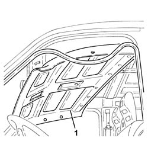

7040H10 ROOF PANEL LINING - R R
- Path
- Procedures > 70 FITTINGS > 7040 BODY INTERIOR FITTINGS AND TRIM > 7040H ROOF PANEL LINING > 7040H10 ROOF PANEL LINING - R R
- Kind
- repair procedure (removal / refitting; the operation number is the code)
- Applies to
- all engines; all production periods
- Interactive page
- https://sloeber94.github.io/elrnDB-fDct/en/#/244001521
Applies to: all engines; all production periods
 Removing
Removing
 Refitting
Refitting- Disconnect the negative battery terminal.
Op. 7040E10 FRONT COURTESY LIGHT - R+R
Op. 7065C34 L/H OR R/H SUN BLIND (ONE) - R+R
Op. 7065C30 INTERIOR L/H OR R/H GRAB HANDLE (ONE) - R+R
Op. 7040H36 CENTRAL TRIM LOWER ELEMENT - R R
Op. 7040H34 CENTRAL PILLAR TRIM - R R
Op. 7040A19 CUSHION PADDING - R R
- < R1 > [for right side]
Op. 7040A20 LEFT DASHBOARD LOWER TRIM - R.R.
- < R1 > [for left side]
Op. 7040H30 FRONT PILLAR TRIM - R R
Op. 7210L10 CAB REAR PARTITION - R.R.
- Partle release the door housing frame seals
- Remove the press-fit buttons fastening the roof lining using the tool indicated.
 | Description | Code | Function |
|---|---|---|---|
. | Knife | 1.878.077.000 | Removing press-fittings |
1. Remove the roof lining.

Applies to: all engines; all production periods
Refitting
Removing- Place the roof lining in position and secure it using the press-fit buttons.
- Fit the seals to the door frames.
Op. 7210L10 CAB REAR PARTITION - R.R.
Op. 7040H30 FRONT PILLAR TRIM - R R
Op. 7040A20 LEFT DASHBOARD LOWER TRIM - R.R.
- < R1 > [for left side]
Op. 7040A19 CUSHION PADDING - R R
- < R1 > [for right side]
Op. 7040H34 CENTRAL PILLAR TRIM - R R
Op. 7040H36 CENTRAL TRIM LOWER ELEMENT - R R
Op. 7065C30 INTERIOR L/H OR R/H GRAB HANDLE (ONE) - R+R
Op. 7065C34 L/H OR R/H SUN BLIND (ONE) - R+R
Op. 7040E10 FRONT COURTESY LIGHT - R+R
- Connect the negative battery terminal.
Topics linked from this page (9)
- 7040A19 CUSHION PADDING - R R
- 7040A20 LEFT DASHBOARD LOWER TRIM - R.R.
- 7040E10 FRONT COURTESY LIGHT - R+R
- 7040H30 FRONT PILLAR TRIM - R R
- 7040H34 CENTRAL PILLAR TRIM - R R
- 7040H36 CENTRAL TRIM LOWER ELEMENT - R R
- 7065C30 INTERIOR L/H OR R/H GRAB HANDLE (ONE) - R+R
- 7065C34 L/H OR R/H SUN BLIND (ONE) - R+R
- 7210L10 CAB REAR PARTITION - R.R.